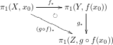
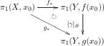
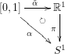
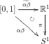
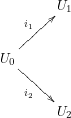
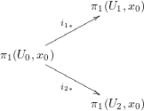

\( \DeclareMathOperator{\rel}{rel} \DeclareMathOperator{\Id}{Id} \newcommand{\tomg}{\tilde{\omega}} \newcommand{\ttomg}{\tilde{\tilde{\omega}}} \newcommand{\Z}{\mathbb{Z}} \newcommand{\R}{\mathbb{R}} \newcommand{\C}{\mathbb{C}} \newcommand{\hesimeq}{\underset{\text{h.e.}}{\simeq}} \)
位相空間 \(X\), \(Y\) について、 " \(X\) と \(Y\) は 同じ か 違う か？"
→何をもって 同じ というのか？
同値関係を導入する。
主に考える同値関係は、「 同相 」、「 ホモトピー同値 」。
幾何学的対象 \(X\) について、何らかの代数的対象 \(I(X)\) （不変量）を次の命題が成り立つように定める ( \(X \to I(X)\) )、 \[ X と Y とが 同じ \Rightarrow I(X) と I(Y) とが同じ。 \]
この逆が成り立つかどうか; 不変量が完全不変量であるかどうか。
有限次元ベクトル空間 \(X\) の次元 \(\dim X \in \Z\) （ \(\dim X\) は代数的対象で不変量）について。
\(X \cong Y\)（線型同値）とは、同型写像が存在することとする。
\(X \cong Y\) ならば \(\dim X = \dim Y\) 。 逆もまた真である。
（d.h. \(\dim\) は有限次元ベクトル空間の完全不変量）
位相空間 \(X\) と基本群 \(\pi_1 (X)\) について
\[ X \cong Y （ホモトピー同値） \Rightarrow \pi_1 (X) \cong \pi_1 (Y) （群として同値） \]
この逆は不成立。 しかし、被覆空間(covering space) という特殊な構造をもった位相空間に限定すると、被覆空間はその基本群で完全に記述できる（最終章）
\(X\) が位相空間とは… \(X\) の部分集合に対して、開集合の定義が与えられていること。
つまり、 \(X\) に位相を与える \(\leftrightarrow\) \(X\) のどの部分集合が開集合なのかを指定する。
（ちなみに \(\bigcap_\lambda U_\lambda\) は開とは限らない）
\(V \subset X\) が 閉集合 \(\Leftrightarrow\) \(X \setminus V\) （ \(V\) の補集合） が開集合
位相空間 \(X,Y\) と写像 \(f: X \to Y\) について
\(f:X \to Y\) が連続 \(\Leftrightarrow\) \(\forall V \subset Y\) が開集合ならば \(f^{-1}(V) \subset X\) は開集合
位相空間 \(X,Y\) の連続写像 \(f:X \to Y\) が 同相写像(homeomorphism) とは次の2つの条件を満たすことである:
\(X,Y\) が 同相(homeomorphic)
\(\Leftrightarrow \exists f :X \to Y\) 同相写像
このとき \(X \approx Y\), \(X \underset{C^0}{\cong} Y\) などと書く。
演習 同相は同値関係であることを示せ。
位相空間 \(X,Y\) と連続写像 \(f:X \to Y\) に対して, \(f\) が ホモトピック(Homotopic) であるとは, 次の条件を見たす連続写像 \(H : X \times [0,1] \to Y\) が存在することである。
\(\simeq\) は集合 \(\{f: X \to Y, 連続写像 \}\) に同値関係を定める; d.h
\([X,Y] = \{ f :X \to Y, 連続写像 \} / \simeq\) ＝ \(X\) から \(Y\) への連続写像のホモトピー類の集合
連続写像 \(f: X \to Y\) に対して, \(f\) の定めるホモトピーに関する同値類を \([f]\) と書いて 写像 \(f\) の ホモトピー類 という。
これを少し一般化する。 \(A \subset X\), 連続写像 \(f,g: X \to Y\) とする。 仮定 \(f|_A = g|_A\) （d.h. \(f(x)=g(x), \forall x \in A\)） このとき \(f \simeq g \rel A\) とは, \(\exists H : X \times [0,1] \to Y\), 連続写像, s.t. \(H_0 = f, H_1 =g, H(a,t)= f(a)= g(a) \forall a \in A\) と定義する。 このとき \(f\) と \(g\) は \(A\) をとめて homotopic という。 当然ながら \(f \simeq g \rel A \Rightarrow f \simeq g\)
\(X\) は \(Y\) と ホモトピー同値(Homotopy equivalent) あるいは、\(X\) と \(Y\) は 同じホモトピー型 をもつとは次の条件をみたすことをいう: \(\exists f : X \to Y, \exists g : Y \to X\), 連続写像, s.t. \(g \circ f \simeq \Id_X, f \circ g \simeq \Id_Y\)
このとき \(X \hesimeq Y, X \simeq Y\) とかく
\(A \subset X\) が \(X\) の deformation retract （変形レトラクト） であるとは \(\exists r : X \to A\), 連続写像 s.t.
但し, \(i : x \in A \mapsto x \in X\), inclusion map である。 \(r\) を retraction map と呼ぶ。
\(i \circ r \simeq \Id_X \rel A\) とは
\(\exists H:X \times [0,1] \to X\)
\(H(x,0) = i \circ r = r(x)\)
\(H(x,1) = \Id_X =x\)
\(H(x,t) = x \ \forall x \in A, \forall t \in [0,1]\)
\(X= \R^n\) ( \(n\) 次元ユークリッド空間),
\(A= \{ 0 \}\): 原点.
このとき \(A=\{0\}\) は \(\R^n\) の deformation retract.
\(r: x \in X \mapsto 0 \in A\) : 一点への定値写像 とおくと、
を示せばよい。 1.は明らか。2.については \(i\) と \(r\) をつなぐ homotopy をつくる。 \(x \in R^n\) をとる。 \(i \circ r (x) = 0\), \(\Id_{\R^n} (x) = x\). であるから
\(H(x,0) = i \circ r (x) = 0\)
\(H(x,1) = \Id_{\R^n} (x) = x\)
\(H(0,t) = 0\)
をみたすように \(H(x,t)= tx\) とおけばよい。
（ \(H:X \times [0,1] \to \R^n\) は連続）
位相空間 \(X\) が 可縮(recontractive)
\(\Leftrightarrow X \hesimeq 一点\)
\(\R^n\) は可縮である。
以下、位相空間 \(X\) は 弧状連結(path-connected) を仮定する; \[ \forall x,y \in X, \exists C : [0,1] \to X:連続写像 \ s.t. C(0)=x, C(1)=y\]
位相空間 \(X\) と \(x_0,x_1 \in X\) に対し、 \[ \Omega(X,x_0,x_1) = \{ \omega : [0,1] \to X, 連続写像 \mid \omega (o) = x_0, \omega (1) = x_1 \} \] すなわち、始点 \(x_0\), 終点 \(x_1\) の \(X\) 内の連続な曲線の集合。
\(x_0 = x_1\) のとき \(\Omega(X,x_0,x_1) = \Omega (X,x_0)\) と書き、 \(x_0\) を基点(base point)とする loop (located loop) の集合という。
変形レトラクト
\(\omega, \omega' \in \Omega (X,x_0,x_1)\) に対し、 \(\omega \simeq \omega' \rel x_0 \cup x_1\) とは次を満たすことをいう: \(\exists \omega_s \in \Omega : s\) について連続, s.t.
\begin{align*} \omega_0 (t) &= \omega (t), & \omega_1 (t) &= \omega' (t) && \forall t \in [0,1] （道のりのパラメータ） \\ \omega_s (0) &= x_0, & \omega_s (1) &= x_1 && \forall s \in [0,1] （ホモトピーのパラメータ） \end{align*}いいかえると, \(\exists H : [0,1] \times [0,1] \to X\) : 連続写像, s.t.
\begin{align*} H(t,0) &= \omega (t),& H(t,1) &= \omega' (t) \\ H(0,s) &= x_0, & H(1,s) &= x_1 \end{align*}ここから \(X\) の群をつくりたい。 だが、始点と終点が異なると積を定義しづらい。 始点＝終点（ループ）なら積になりそう。
\(\omega_0, \omega_1 \in \Omega(X,x_0)\) に対して
\begin{equation*} (\omega_0,\omega_1)(t)= \begin{cases} \omega_0 (2t) & 0 \leq t \leq 1/2 \\ \omega_1 (2t-1) & 1/2 \leq t \leq 1 \end{cases} \end{equation*}（ \(t=1/2\) で \(\omega_0 (1) = \omega_1 (0) = x_0\) だから連続。 積の順番に従って \(\omega_0\) が先、 \(\omega_1\) が後、と定義している）
このとき \[ \omega_0 \omega_1 \in \Omega (X,x_0) \] が定まるので、これを \(\omega_0\) と \(\omega_1\) の loop積 という。
loop積は結合法則が成り立たない
従って \[ (\omega_0 \omega_1) \omega_2 \neq \omega_0 (\omega_1 \omega_2 ) \]
通る"時間"は違うけれど"経路"は同じなので、その違いを捨象すればよさそう。
→ホモトピーで割る; ホモトピーの同値関係で割る＝ホモトピックな loop は同一視する。
\[ \pi_1(X,x_0) := \Omega (X, x_0) / \simeq \rel x_0 \] とおき、これを（ \(x_0\) を基点とする） \(X\) の 基本群 という。
\( \newcommand{\PI}{\pi_1 (X,x_0)} \)
\([\omega_0],[\omega_1] \in \pi_1 (X,x_0) = \Omega (X, x_0) / \simeq \rel x_0\)
\([\omega_0][\omega_1] := [\omega_0 \omega_1]\)
この積は well-defined である;
\(\omega_0 \simeq \omega'_0, \omega_1 \simeq \omega'_1\) ならば \(\omega_0 \omega_1 \simeq \omega'_0 \omega'_1 \rel x_0\) である。
\(\omega_0 \simeq \omega'_0 \rel x_0\) より \(\exists \tilde{\omega_0} : [0,1] \times [0,1] \to X\): 連続写像, s.t.
\begin{align*} \tilde{\omega_0} (t,0) &= \omega_0 (t) & \tilde{\omega_0} (t,1) &= \omega'_0 (t) \\ \tilde{\omega_0} (0,s) &= x_0 = & \tilde{\omega_0} (1,s) & \end{align*}同じく \(\exists \tilde{\omega_1} : [0,1] \times [0,1] \to X\): 連続写像, s.t.
\begin{align*} \tilde{\omega_1} (t,0) &= \omega_1 (t) & \tilde{\omega_1} (t,1) &= \omega'_1 (t) \\ \tilde{\omega_1} (0,s) &= x_0 = & \tilde{\omega_1} (1,s) & \end{align*} \begin{equation*} \ttomg (t,s) = \begin{cases} \tomg_0 (2t,s) & 0 \leq t \leq 1/2 \\ \tomg_1 (2t-1,s) & 1/2 \leq t \leq 1 \end{cases} \end{equation*}とすれば
\begin{align*} \ttomg (t,0) &= \left\{ \begin{split} &\tomg_0 (2t,0) &= \omega_0 (2t) \\ &\tomg_1 (2t-1,0) &= \omega_1 (2t-1) \end{split} \right. \\ &= (\omega_0 \omega_1 )(t) \end{align*} \begin{align*} \ttomg (t,1) &= \left\{ \begin{split} &\tomg_0 (2t,1) & = \omega'_0 (2t) \\ &\tomg_1 (2t-1,1) & = \omega'_1 (2t-1) \end{split} \right. \\ &= (\omega'_0 \omega'_1 )(t) \end{align*} \begin{equation*} \ttomg (0,s) = \tomg (0,s) = x_0 \end{equation*} \begin{equation*} \ttomg (1,s) = \tilde{\omega} (1,s) = x_0 \end{equation*}よって \(\ttomg\) は \(\omega_0 \omega_1\) と \(\omega'_0 \omega'_1\) をつなぐ homotopy を与える; \[ \omega_0 \omega_1 \simeq \omega'_0 \omega'_1 \rel x_0 \] つまり \[ [\omega_0 \omega_1 ] = [\omega'_0 \omega'_1 ] \in \pi_1 (X,x_0) \]
(1)単位元、 (2)結合法則、(3)逆元
\(e_{x_0} : t \in [0,1] \mapsto x_0 \in X\) : 定値写像
\(\forall [ \alpha ] \in \pi_1 (X,x_0)\) に対して \[ [ e_{x_0} ] [ \alpha ] = [ \alpha ] [ e_{x_0} ] = [ \alpha ] \] すなわち \([ e_{x_0} ]\) は \(\PI\) の単位元。 \(1 \equiv [ e_{x_0} ]\) ともかく。
まず
\(\alpha \simeq e_{x_0} \alpha\)
を示す。
求める連続写像 \(H : [0,1] \times [0,1] \to X\) の境界条件は
一般化して考えてみる。 境界条件が与えられたとき、これをみたして \([0,1] \times [0,1]\) の内部まで連続的にのばせるか（拡張できるか）？
変数に注目すると \[ r : [0,1] \times [0,1] \to [0,1] ,連続写像 \] が境界条件をみたすようにつくれれば、
\begin{equation*} H(t,s) = \begin{cases} x_0 & s \geq 2t \\ \alpha(r(t,s)) & s \leq 2t \end{cases} \end{equation*}が求める \(H\) となる。
\(r(t,s)\) のみつけ方の例
\(s=2t\) 上で \(r= 0\) になってほしいので、例えば \(s-2t\)
\(s= 0\) 上で \(r= t\) になってほしいので、例えば \(\dfrac{s-2t}{-2}\)
\(s= 1\) 上で \(r=2t-1\) になってほしいので、例えば \(\dfrac{s-2t}{s-2}\)
\(t= 1\) 上で \(r= 1\) になってほしい…OK
よって \(r(t,s) = \dfrac{s-2t}{s-2}\) とおくと、 \([0,1] \times [0,1]\) 上で連続で 境界条件をすべてみたす。
\begin{equation*} H(t,s) = \begin{cases} x_0 & s \geq 2t \\ \alpha(r(t,s)) & s \leq 2t \end{cases} \end{equation*}次に \(\alpha e_{x_0} \simeq \alpha\) を示す。
境界条件は
\begin{align*} H(t,0) & = \alpha e_{x_0} = \begin{cases} \alpha (2t) & 0 \leq t \leq 1/2 \\ e_{x_0} (2t-1) & 1/2 \leq t \leq 1 \end{cases} \\ H(t,1) & = \alpha(t) \\ H(0,s) & = H (1,s) = x_0 \end{align*}である。
\begin{equation*} H(t,s) = \begin{cases} x_0 & s \geq -2(t-1) \\ \alpha(r(t,s)) & s \leq -2(t-1) \end{cases} \end{equation*}
このとき \(r(t,s)\) は、
\(-s+2 = 2t\) 上で \(r= 1\) になってほしいので、例えば \(\dfrac{2t}{-s+2}\)
\(s= 0\) 上で \(r= t\) になってほしい…OK
\(s= 1\) 上で \(r=2t\) になってほしい…OK
\(t= 0\) 上で \(r= 0\) になってほしい…OK
よって \(r(t,s) = \dfrac{2t}{-s+2}\) とおくと、 \([0,1] \times [0,1]\) 上で連続で 境界条件をすべてみたす。
\begin{equation*} H(t,s) = \begin{cases} x_0 & s \geq 2t \\ \alpha(r(t,s)) & s \leq 2t \end{cases} \end{equation*}示すべきこと: \[ (\alpha \beta) \gamma \simeq \alpha (\beta \gamma) \rel x_0 \] すなわち \(\exists H:[0,1] \times [0,1] \to X\), 連続写像, s.t.
\begin{align*} H(t,0) &= (\alpha \beta) \gamma (t) \\ H(t,1) &= \alpha (\beta \gamma) (t) \\ H(0,s) &= H(1,s) = x_0 \end{align*}ここで
\begin{equation*} (\alpha \beta) \gamma = \begin{cases} \alpha(4t) &= 0 \leq t \leq 1/4 \\ \beta(4t-1) &= 1/4 \leq t \leq 1/2 \\ \gamma(2t-1) &= 1/2 \leq t \leq 1 \end{cases} \end{equation*} \begin{equation*} \alpha(\beta \gamma) = \begin{cases} \alpha(2t) &= 0 \leq t \leq 1/2 \\ \beta(4t-2) &= 1/2 \leq t \leq 3/4 \\ \gamma(4t-3) &= 3/4 \leq t \leq 1 \end{cases} \end{equation*}(イ)(ロ)(ハ)の3つの領域に分けて考えてみると
とすれば各領域の境界条件をみたす。
\begin{equation*} H(t,s) = \begin{cases} \alpha( r_1 ) &=& \alpha \left( \dfrac{4t}{s+1} \right) &s \geq 4t -1 \\ \beta ( r_2 ) &=& \beta \left( 4t-s-1 \right) & 4t-1 \geq s \geq 4t-2 \\ \gamma( r_3 ) &=& \gamma \left( \dfrac{4t-s-2}{-s+2} \right) & s \leq 4t-2 \end{cases} \end{equation*}とおくと、 \(H\) は \((\alpha \beta)\gamma \simeq \alpha(\beta \gamma) \rel x_0\) のホモトピーを与える。
\[ [\alpha][\alpha]^{-1} = [\alpha]^{-1} [\alpha] = [ e_{x_0} ] = 1 \]
\([\alpha]^{-1} = [\alpha^{-1}]\) と定める。
但し \(\alpha^{-1} (t) = \alpha(1-t) \in \Omega (X,x_0)\), 逆向きのループ
示すべきこと:
1.の定義の well-defined かどうかについては \(\alpha \simeq \alpha' \rel x_0\) のとき \(\alpha^{-1} \simeq (\alpha')^{-1} \rel x_0\) を示す。
仮定より、 \(\exists H(t,s)\) s.t
\begin{align*} &H(t,0) &=& \alpha (t) \\ &H(t,1) &=& \alpha'(t) \\ &H(0,s) &=& H(1,s) = x_0 \end{align*}なので \(H'(t,s) = H(1-t,s)\) とおけば
\begin{align*} &H'(t,0) &=& H(1-t,0) &=& \alpha (1-t) = \alpha^{-1} (t) \\ &H'(t,1) &=& H(1-t,1) &=& \alpha'(1-t) = (\alpha')^{-1}(t)\\ &H'(0,s) &=& H'(1,s) &=& x_0 \end{align*}であるので \(H'\) は \(\alpha^{-1}\) と \((\alpha')^{-1}\) をつなぐホモトピーである。
2.について \(\alpha \alpha^{-1} \simeq e_{x_0} \rel x_0\) の境界条件は
\begin{align*} H_1(t,0) &= \alpha \alpha^{-1} \begin{cases} \alpha (2t) & 0 \leq t \leq 1/2 \\ \alpha^{-1}(2t-1) & 1/2 \leq t \leq 1 \end{cases} \\ H_1(t,1) &= e_{x_0} \\ H_1(0,s) &= H_1(1,s) = x_0 \end{align*}ここで
\begin{equation*} \begin{cases} r_1 (t,s) = \dfrac{2t}{s-1} & s \leq -2t +1 \\ r_2 (t,s) = \dfrac{-2t+s+1}{s-1} & s \leq 2t -1 \end{cases} \end{equation*}とおくと
\begin{equation*} H_1(t,s) = \begin{cases} \alpha ( r_1 (t,s)) = \alpha \left( \dfrac{2t}{s-1} \right) & s \leq -2t+1 \\ \alpha^{-1} (r_2(t,s)) = \alpha^{-1} \left( \dfrac{-2t+s+1}{s-1} \right) & s \leq 2t-1 \end{cases} \end{equation*}が求めるホモトピーとなる。
\(\alpha^{-1} \alpha \simeq e_{x_0} \rel x_0\) の境界条件は
\begin{align*} H_2(t,0) &= \alpha^{-1} \alpha \begin{cases} \alpha^{-1}(2t) & 0 \leq t \leq 1/2 \\ \alpha (2t-1) & 1/2 \leq t \leq 1 \end{cases} \\ H_2(t,1) &= e_{x_0} \\ H_2(0,s) &= H_2(1,s) = x_0 \end{align*}ここで
\begin{equation*} \begin{cases} r_3 (t,s) = \dfrac{2t}{-s+1} & s \leq -2t +1 \\ r_4 (t,s) = \dfrac{2t-s-1}{-s+1} & s \leq 2t -1 \end{cases} \end{equation*}とおくと
\begin{equation*} H_2(t,s) = \begin{cases} \alpha^{-1} ( r_3 (t,s)) = \alpha^{-1} \left( \dfrac{2t}{-s+1} \right) & s \leq -2t+1 \\ \alpha (r_4(t,s)) = \alpha \left( \dfrac{2t-s-1}{-s+1} \right) & s \leq 2t-1 \end{cases} \end{equation*}が求めるホモトピーとなる。
\(\gamma \in \Omega (X,x_0,y_0)\) とする。 ( \(X\) は弧状連結だから \(\Omega (X,x_0,y_0) \neq \emptyset\) ) \[ [ \gamma ]_{\#} : [ \alpha ] \in \PI \mapsto [\gamma^{-1} \alpha \gamma] \in \pi_1 (X,y_0)\] は群の同型写像を与える。
\([\gamma]_{\#}\) の定義は well-defined か; \[ \gamma \simeq \gamma' \rel x_0 \cup y_0 \Rightarrow [ \gamma ]_{\#} = [ \gamma' ]_{\#} \] 仮定より \(\exists H(t,s)\) s.t.
\begin{align*} H(t,0) &= \gamma (t) \\ H(t,1) &= \gamma'(t) \\ H(0,s) &= x_0 \\ H(1,s) &= y_0 \end{align*}このとき、任意に \(\alpha \in \Omega (X,x_0,x_0)\) をとると
\begin{equation*} \gamma^{-1} (\alpha \gamma) = \begin{cases} \gamma^{-1} (2t) = \gamma (1-2t) & 0 \leq t \leq 1/2 \\ \alpha (4t-1) & 1/2 \leq t \leq 3/4 \\ \gamma (4t-3) & 3/4 \leq t \leq 1 \end{cases} \end{equation*} \begin{equation*} \gamma'^{-1} (\alpha \gamma') = \begin{cases} \gamma'^{-1} (2t) = \gamma' (1-2t) & 0 \leq t \leq 1/2 \\ \alpha (4t-1) & 1/2 \leq t \leq 3/4 \\ \gamma' (4t-3) & 3/4 \leq t \leq 1 \end{cases} \end{equation*}なので
\begin{equation*} \mathscr{H} (t,s) = \begin{cases} H(1-2t,s) & 0 \leq t \leq 1/2 \\ \alpha(4t-1) & 1/2 \leq t \leq 3/4 \\ H(4t-3,s) & 3/4 \leq t \leq 1 \end{cases} \end{equation*}が \(\gamma^{-1} (\alpha \gamma)\) と \(\gamma'^{-1} (\alpha \gamma') ( \in \Omega(X,y_0,y_0))\) をつなぐホモトピーを与える; \[ [ \gamma^{-1} \alpha \gamma ] = [ \gamma'^{-1} \alpha \gamma ] \]
\([\gamma]_{\#}\) が群準同型写像であること: \(\forall [\alpha],[\beta] \in \PI\) \[ [\gamma]_{\#} ([\alpha][\beta]) = ([\gamma]_{\#} [\alpha] [\gamma]_{\#} [\beta]) \] を示す。
\begin{align*} [\gamma]_{\#} ( [\alpha \beta] ) &= [ \gamma^{-1} \alpha \beta \gamma ] \\ &= [ \gamma^{-1} \alpha \gamma \cdot \gamma^{-1} \beta \gamma ] \\ &= [ \gamma^{-1} \alpha \gamma ] [ \gamma^{-1} \beta \gamma ] \\ &= ([\gamma]_{\#} [\alpha] ) ( [\gamma]_{\#} [\beta]) \end{align*}\([\gamma]_{\#}\) が同型写像であること
\begin{align*} ([\gamma^{-1}]_{\#} [\gamma]_{\#} ) [\alpha] &= [\gamma^{-1}]_{\#} ([\gamma^{-1} \alpha \gamma]) \\ &= [\gamma (\gamma^{-1} \alpha \gamma ) \gamma^{-1} ] \\ &= [\alpha] \end{align*}同様に \([\gamma]_{\#}[\gamma^{-1}]_{\#} = \Id\) 。 故に、 \([\gamma]_{\#}\) は全単射。
\(X,Y\) :弧状連結位相空間と \(f:X \to Y\) :連続関数に対して, \[ f_* : \PI \to \pi_1 (Y,f(x_0)) ,\ f_* : [\alpha] \mapsto [f \circ \alpha] \] により定義すると

(1) \([\alpha] ,[\beta] \in \PI\)
\begin{equation*} f_* ([\alpha] [\beta]) = f_* ( [\alpha \beta]) = [ f \circ ( \alpha \beta ) ] = \begin{cases} (f \circ \alpha ) (2t) & 0 \leq t \leq 1/2 \\ (f \circ \beta ) (2t-1) & 1/2 \leq t \leq 1 \end{cases} \end{equation*} \begin{equation*} f_* ([\alpha]) f_*( [\beta]) = [f_* \alpha] [f_* \circ \beta] = [(f_* \alpha) (f_* \circ \beta) ] = \begin{cases} (f \circ \alpha ) (2t) & 0 \leq t \leq 1/2 \\ (f \circ \beta ) (2t-1) & 1/2 \leq t \leq 1 \end{cases} \end{equation*}
よって \(f_* ([\alpha] [\beta]) = f_* ([\alpha]) f_*( [\beta])\)
(2)
\[ ( g \circ f)_* ([\alpha]) = [ (g \circ f) \circ \alpha ] = [ g \circ ( f \circ \alpha) ]
= g_* [ f \circ \alpha] = g_* \circ f_* [ \alpha ] \]
(ホモトピー不変性)
連続写像 \(f,g: X \to Y\) が \(f \simeq g\) ならば, \[ g_* = f_* \circ [ \gamma ]_\# \]. 
但し \(\gamma\) は \(f \simeq g\) のホモトピー \(F\) ( \(F:X \times [0,1] \to Y, F(x,0) = f(x), F(x,1)=g(x)\) )を一つ選ぶことによって定まる \(f(x_0)\) から \(g(x_0)\) への \(Y\) の道: \[ \gamma : t \in [0,1] \mapsto F(x,t) \in Y\] で定まる道で \([\gamma]_\#\) は \(\gamma\) から定まる自己内部同型
いうべきこと \[ f_* \circ [ \gamma ]_\# = g_*; \] \(\forall [\alpha] \in \PI\) に対して \[ [ \gamma ]_\# \circ f_* ( [ \alpha ]) = g_* ([\alpha]); \] \[ \gamma^{-1} ( f \circ \alpha) \gamma \simeq g \circ \alpha \rel g(x_0) \] である。
まず各 \(s \in [0,1]\) に対して \(\gamma (s)\) を基点とするloop: \[ \gamma_s : t \in [0,1] \mapsto F( \alpha(t),s) \in Y \] より \(\gamma^{-1} ( f \circ \alpha) \gamma \simeq g \circ \alpha \rel g(x_0)\) のホモトピーをつくる。
\begin{equation*} H(t,0) = g \circ \alpha (t) \end{equation*} \begin{equation*} H(t,1) = \gamma^{-1} (( f \circ \alpha) \gamma) (t) = \begin{cases} \gamma (1-2t) & 0 \leq t \leq 1/2 \\ f \circ \alpha (4t-2) & 1/2 \leq t \leq 3/4 \\ \gamma (4t-3) & 3/4 \leq t \leq 1 \end{cases} \end{equation*} \begin{equation*} H(0,s) = H(1,s) = g(x_0) \end{equation*}が境界条件なので
\begin{equation*} H(t,s) = \begin{cases} \gamma (1-2t) & s \leq -2t +1 \\ \gamma_s \left( \frac{4t+2s-2}{3s+1} \right) & s \geq -2t +1 かつ s \geq 4t -3 \\ \gamma (4t-3) & s \leq 4t -3 \end{cases} \end{equation*}とすればよい
(基本群のホモトピー不変性)
\[ X \hesimeq Y \Rightarrow \pi_1 (X) \cong \pi_1 (Y) \] 日本語でいえば、 同じホモトピー型を持つ \(X,Y\) の基本群は同型
前の定理より出ること
\(X \hesimeq Y\) なので定義より \(\exists f : X \to Y, \exists g: Y \to X\) : 連続写像 s.t. \[ f \circ g \simeq \Id_X , g \circ f \simeq \Id_Y \] よって前の定理より \[ [ \gamma ]_\# \circ (g \circ f)_* = (\Id_X)_* = \Id_{\pi_1(X)} \] \([\gamma]_\#\) は同型写像なので \[ (g \circ f)_* = [ \gamma]_\#^{-1} \] よって \(g_*\) は全射かつ \(f_*\) は単射
同様に \(f_* \circ g_* = \Id_Y\) より \(g_*\) は単射かつ \(f_*\) は全射。
\(f_*, g_*\) は同型写像; \[ \pi_1 (X) \xrightarrow[f_*]{ \sim } \pi_1 (Y) \]
ちなみに一般に
のとき \(g\) は全射かつ \(f\) は単射
\(X\) が 単連結 ( simply connected, 1-connected) とは 基本群が自明であること; \[ \pi_1 (X) =1 \]
基本群 \(\pi_1\) の下付きの \(1\) は 1-connected の1を意味している。 あるいは一次元のひも(loop)をなげて調べることを意味している。
\(\pi_1 (X) = 1\) とは任意のloopが定値写像と homotopic であること（どんななげ方をしてもひもを全部回収できること）である。
答えを先に提示しておくと \[ \pi_1 ( S^1) = \Z \] （したがって \(\R^n \not\hesimeq S^1\))
\[S^1 := \{ z \in \C \mid |z| =1 \} \] \(\pi : t \in \R^1 \mapsto \exp(2 \pi i t) \in S^1\)
\(\forall \alpha : [0,1] \to S^1\) :連続写像で \(\alpha(0) = \alpha(1)=1\) なるものに対して \(\exists! \tilde{\alpha}: [0,1] \to \R^1\) :連続関数 s.t.

この \(\tilde{\alpha}\) を \(\alpha\) の \(\R^1\) への 持ち上げ(lift) という
これは多価関数であるから一価関数にするために \(\log\) の枝を選ぶ必要があるが, 2.の条件により
\begin{align*} &\tilde{\alpha} (0) &=& 0 ;\\ &\log (\alpha (0)) &=&0 ;\\ &\arg (\alpha(0)) &=& 0 \ (\alpha (0) =1 \in \C なので) \end{align*}であるものを選べば \(\log\) は一価関数として一意に決まる。
\([\alpha] \in \pi_1 (S^1,1)\) に対して \[ \tilde{\alpha}(1) = \frac{1}{2 \pi} \arg (\alpha(1)) \in \Z \] とおき、 これを \(\alpha\) の 回転数 と呼ぶ
\[ \varphi : [\alpha] \in \pi_1 (S^1,1) \mapsto \tilde{\alpha} (1) \in \Z \] を定めると
d.h. \(\varphi\) は群同型写像で, \(\pi_1 (S^1,1) \cong \Z\)
これを
にわける.
\(\alpha \simeq \alpha' \rel 1\) より \(\exists H:[0,1] \times [0,1] \to S^1\) :連続関数 s.t.
\begin{cases} H(t,0) = \alpha(t) \\ H(t,1) = \alpha'(t) \\ H(0,s) = H(1,s) =1 \end{cases}このとき \[ \tilde{H} (t,s) = \frac{1}{2 \pi i} \log H(t,s) = \frac{1}{2\pi} \arg H(t,s)\] を、\(\tilde{H} (0,s) = 0\) となるように選ぶと \(\tilde{H}\) は一価関数で
\begin{cases} \tilde{H}(t,0) = \tilde{\alpha}(t) \\ \tilde{H}(t,1) = \tilde{\alpha'}(t) \\ \tilde{H}(0,s) = \tilde{H}(1,s) =0 \end{cases}なので、 \(\tilde{H_s} := \tilde{H} (t,s)\) は \(\tilde{\alpha} \simeq \tilde{\alpha'} \rel 0\) のホモトピーを与える。
\(\tilde{H_s} : t \in [0,1] \mapsto H(t,s) \in \R^1\) に対して \(\tilde{H} : s \in [0,1] \mapsto \tilde{H_s}(1) = \tilde{H}(1,s) \in \R^1\) なる写像を考える。
\(\tilde{H}\) は連続で、 \([0,1]\) は連結であるから、 \(\tilde{H} ( [0,1] )\) は連結である。
一方 $~{H} ([0,1]) ∈ \Z$であるので、 \(\tilde{H}([0,1]) =\) 定数である。
\[ \tilde{\alpha}(1) = \tilde{H} (0) = \tilde{H} (1) = \tilde{\alpha'} (1) \]
\(\forall [ \alpha ], [ \beta ] \in \pi_1 (S^1,1)\) に対して, \[ \varphi ([\alpha] [\beta]) = \varphi([\alpha]) + \varphi ([\beta]) \] を示す.
\begin{align*} \varphi ([\alpha]) = \tilde{\alpha}(1) = a \in \Z \\ \varphi ([\beta]) = \tilde{\beta}(1) = b \in \Z \end{align*}とする.
\[ \varphi ([\alpha] [\beta]) = \varphi ([\alpha \beta])] = \widetilde{\alpha \beta} (1) \] だから
\begin{equation*} (\alpha \beta) (t) = \begin{cases} \alpha (2t) & 0 \leq t \leq 1/2 \\ \beta(2t-1) & 1/2 \leq t \leq 1 \end{cases} \end{equation*}より  が可換で, \(\widetilde{\alpha \beta} (0) = 0\) なる \(\widetilde{\alpha \beta}\) を求めたい.
\begin{equation*} \widetilde{\alpha \beta} = \frac{1}{2\pi i} \log \alpha \beta (t) = \frac{1}{2 \pi} \arg \alpha \beta (t) = \frac{1}{2 \pi} \arg \begin{cases} \alpha (2t) & 0 \leq t \leq 1/2 \\ \beta(2t-1) & 1/2 \leq t \leq 1 \end{cases} \end{equation*}ここで条件より \(\widetilde{\alpha \beta} (0) \frac{1}{2 \pi} \alpha (0) = 0\) なる枝をとる. (これは \(\tilde{\alpha} (1)\) を定めるときにとった枝と同じ).
\(t=1/2\) で連続でなければならない. \[ \frac{1}{2 \pi} \arg \alpha (1) = \tilde{\alpha} (1) = a \] \[ \frac{1}{2 \pi} \arg \beta (0)\]
つまり \(\beta\) の lift \(\tilde{\beta}\) として \(\tilde{\beta} (0) =0\) にすれば, \(t=1/2\) で連続にならない.
\(\tilde{\tilde{\beta}}\): かつ \(\tilde{\tilde{\beta}} = a\) なるものが一つとれる. このとき \(t=1/2\) で連続. \[ \tilde{\tilde{\beta}} (1) = a + \tilde{\beta} (1); \] \[ \widetilde{\alpha \beta} (1) = \tilde{\tilde{\beta}} = a + \tilde{\beta} (1) = a + b; \] \[ \varphi ( [\alpha] [\beta] ) = \varphi([\alpha]) + \varphi ([\beta]) \]
\(\forall n \in \Z\) に対し \[ \alpha_n (t) := \exp (2 \pi i n t) \] とおけば, \([\alpha_n] \in \pi_1 (S^1,1)\) で \(\varphi ([\alpha_n])=n\).
\(\varphi\) は群準同型だから \(\varphi [\alpha] = 0 \Rightarrow [\alpha] = 1 \in \pi_1(S^1)\) (Ker の自明性)を示せばよい.
\[ \varphi [\alpha] =0 \Leftrightarrow \tilde{\alpha} (1) =0; \] \(\tilde{\alpha} \in \Omega(\R^1,0)\) : \(0 \in \R^1\) を基点とするloop. よって \([\tilde{\alpha}] \in \pi_1 (\R^1,1) \cong 1\) (\(\R^1\) は可縮なので) \[ \tilde{\alpha} \simeq e_0 \rel 0. \] このホモトピーを \(\tilde{H}_s\) とする.
\(\tilde{H}_s\) を \(\pi\) で下へ落とす; \[ H_s := \pi \circ \tilde{H}_s \] とすると,
\begin{equation*} \begin{cases} H_0 = \pi \circ \tilde{H_0} = \alpha \\ H_1 = \pi \circ e_0 = e_1 \end{cases} \end{equation*}で \(H_s\) は \(\alpha\) と \(e_1\) をつなぐホモトピーを与える; \[ \alpha \underset{H_s}{\simeq} e_1 \rel 1 \] よって \([\alpha] =1 \in \pi_1 (S^1,1)\).
(\(\varphi\) が単射というのはつまり, \(S^1\) への2つのloopの回転数が異なると, 2つのloopはホモトピックではない, ということを意味している)
前でやったように 位相空間 \(X\) が与えられたときに \(\pi_1 (X)\) を定義にもとづいて計算するのは難しい(こともある).
そこで
そのための定理として Van Kanpen の定理を紹介する.
\(X\): 弧状連結な位相空間
\(X= U_1 \cup U_2\).
\(U_1,U_2,U_0=U_1 \cap U_2\) はどれも弧状連結で \(\neq \emptyset\) であるとする.
このとき \(x_0 \in U_0 =U_1 \cap U_2\) に対して, \[ \PI \cong \pi_1 (U_1,x_0) * \pi_1 (U_2,x_0) / N \] が成り立つ.
ただし \(*\) は free product(自由積)で, \(N\) は次で定義される \(\pi_1 (U_1,x_0) * \pi_1 (U_2,x_0)\) の正規部分群.
\(i_1 : U_0 \to U_1\): inclusion map
\(i_2 : U_0 \to U_2\): inclusion map
 
\(N\) は \(g \in \pi_1 (U_0,x_0)\) をとったときに \(i_{1*} (g) , (i_{2*} (g))^{-1}\) で生成される \(\pi_1 (U_1,x_0) * \pi_1 (U_2,x_0)\) の中の正規部分群.
\(\Z = <\alpha>\): 生成元1つで関係式なし
\(\Z / 2 \Z = < \alpha \mid \alpha^2 =1>\): 生成元1つ, 関係式1つ
\(\Z \oplus \Z < \alpha, \beta \mid \alpha \beta = \beta \alpha >\): 生成元2つ, 関係式1つ（Abel群）
\(<\alpha , \beta \mid \alpha^2 =1 , \beta^3=1, \alpha \beta = \beta \alpha> \cong \Z / 2 \Z \oplus \Z / 3 \Z \cong \Z / 6 \Z\) :真ん中は生成元2, 関係式3, 最後は生成元1, 関係式1 と群の表示の仕方はいろいろできる.
関係式が1つもない群を 自由群(free group) という. 生成元が \(r\) 個の自由群を \(F_r\) と書く. \(r\): 階数(rank) \[ F_r = < \alpha_1,\dots,\alpha_r> \]
\(\pi_1 (U_1,x_0), \pi_1 (U_2,x_0)\) を生成元と関係式で表示する.
\begin{align*} \pi_1 (U_1,x_0) &= < \alpha_1,\dots,\alpha_k \mid R_s(\alpha_1,\dots,\alpha_k)=1, s=1,2,\dots > \\ \pi_1 (U_2,x_0) &= < \beta_1 ,\dots, \beta_l \mid R'_t(\beta_1 ,\dots,\beta_l )=1, t=1,2.\dots > \end{align*}このとき \(\pi_1 (U_1,x_0)\) と \(\pi_1 (U_2,x_0)\) の自由積は
\begin{equation*} \pi_1 (U_1,x_0) * \pi_1 (U_2,x_0) := \left< \begin{aligned} \alpha_1,\dots,\alpha_k &\mid R_s(\alpha_1,\dots,\alpha_k)=1, s=1,2,\dots \\ \beta_1 ,\dots,\beta_l &\mid R'_t(\beta_1 ,\dots,\beta_l )=1, t=1,2.\dots \end{aligned} \right> \end{equation*}この段階では \(\alpha\) と \(\beta\) の関係式はない.
\begin{multline*} \pi_1 (U_1,x_0) * \pi_1 (U_2,x_0) = \\ < \alpha_1,\dots,\alpha_k ,\beta_1 ,\dots,\beta_l \mid R_s(\dots)=1,R'_t(\dots)=1, \\ i_{1*} (g) (i_{2*}(g))^{-1}=1, g \in \pi_1 (U_0,x_0) > \end{multline*}d.h. \(N\) でわる \(\Leftrightarrow\) 関係式を追加する. \(\Leftrightarrow i_{1*} (g) = i_{2*}(g)\): 「はり合わせる」
Van Kanpen の定理の系
\(X = U_1 \cup U_2\).
\(S^1 \vee S^1\) ＝ 2つの \(S^1\) を1点でくっつけたもの。
\(S_1^1 \vee S_2^1 = U_1 \cup U_2\), \(U_1=S_1^1\), \(U_2=S_2^1\), \(U_1 \cap U_2 = 1点\) : 弧状連結
\[ \pi_1 (U_1 \cap U_2) = \pi_1 (1点) = 1 \] よって \(N=1\).
\[ \pi_1 (S_1^1 \vee S_2^1) \cong \pi_1 (S_1^1) * \pi_1 (S_2^1) \cong \Z * \Z = F_2 \]
\(\alpha_1,\alpha_2\): それぞれ \(S_1^1, S_2^1\) の回転数1のループとすれば, \[ \pi_1 (S_1^1 \vee S_2^1) = < \alpha_1 , \alpha_2 > \] と書ける.
同様に,
\(S^1 \vee S^1 \vee \dots \vee S^1\) ＝ \(r\) 個の \(S^1\) を 1点でくっつけたもの ＝ \(S^1\) の \(r\) 個の ブーケ
\[ \pi_1 (S^1 \vee \dots \vee S^1) \cong \Z * \dots * \Z = F_r \]
\(\R^2 \setminus \{ p_1,\dots,p_r \} \hesimeq S^1 \vee \dots \vee S^1\) : \(r\) 個のブーケ
\[ \pi_1 (\R^2 \setminus \{ p_1,\dots,p_r\} ) \cong F_r \]
\(X=S^n\) : \(n\) 次元球面 \(= \{ (x_0,\dots,x_n) \in \R^{n+1} \mid \Sigma x_i^2 =1 \}\)
\begin{equation*} \pi_1 (S^n) = \begin{cases} \Z & n=1 \\ 1 & n \ge 2 \end{cases} \end{equation*}\(n=1\) のときは既にやった.
\(n \ge 2\) のとき
\begin{align*} U_1 &= \{ (x_0,\dots,x_n) \in S^n \mid x_n < 1/2 \} \\ U_2 &= \{ (x_0,\dots,x_n) \in S^n \mid x_n > -1/2 \} \\ U_1 \cap U_2 &= \{ (x_0,\dots,x_n) \in S^n \mid -1/2 < x_n < 1/2 \} \approx S^{n-1} \times (-1/2,1/2) \end{align*}\(n \ge 2\) より \(U_1 \cap U_2\) は弧状連結.
\(B^n\) : (\(n\) 次元開球)とすると, \[ U_1 \approx U_2 \approx B^n \approx R^n \hesimeq 1点. \] つまり \[ \pi_1(U_1) = \pi_1(U_2) =1. \] よって \[ \pi_1 (S^n) = \pi_1(U_1)*\pi_1 (U_2) /N \cong 1.\]
ちなみに \(n=1\) のとき, \(U_1,U_2\) は弧状連結で \(B^1\) (開区間)と同相で1点可縮. \[ \pi_1(U_1) = \pi_1(U_2) = 1 \] しかし, \(U_1 \cap U_2\) は非連結. もちろん \(\pi_1 (S^1) \neq 1\).
\(S^1 \not\hesimeq S^n (n \ge 2)\)
\(\R^{n+1} \setminus O \hesimeq S^n\) なので
\begin{equation*} \pi_1 (\R^{n+1} \setminus O) \cong \pi_1(S^n) \begin{cases} \Z & n=1 \\ 1 & n \ge 2 \end{cases} \end{equation*}\(X\): 位相空間が Hausdorff (の分離公理をみたす) とは, \[ \Leftrightarrow \forall x , \forall y \in X, \ \exists O(x) \subset X, \exists V(y) \subset X {\text s.t.} O(x) \cap V(y) \neq \emptyset \] \(O(x),V(y)\) はそれぞれ \(x,y\) の開近傍.
以下, 位相空間は Hausdorff を仮定する.
\( \newcommand{\Xti}{\widetilde{X}} \newcommand{\xti}{\tilde{x}} \)
\(X,\Xti\) :位相空間
\(\Xti\) が \(X\) の被覆空間(covering space) とは \[ \exists p : \Xti \to X: 連続写像 \] s.t.
上のような \(U\) を 標準近傍(cannonical neighborhood) という
\(p: \Xti \to X\): 被覆空間,
このとき次が成り立つ.
\(\forall x \in X\), \(\#p^{-1}(x) = \# \{ \xti \in \Xti \mid p(\xti) =x \}\) は \(x\) によらず一定である.
この \(\#p^{-1}(x)\) を \(p:\Xti \to X\) の 次数(degree) といい, \(p:\Xti \to X\) は \(d\) 重被覆空間 という.
\(p: \R^1 \to S^1\), \[p(t) = \exp (2 \pi i t) \] は degree \(= \infty\) の被覆空間.
\(p: \R^n \to T^n = S^1 \times S^1 \times \dots \times S^1\), \(n\) 次元トーラス \[p(t_1,\dots,t_n) = (\exp (2 \pi i t_1),\dots,\exp (2 \pi i t_n) )\] は degree \(= \infty\) の被覆空間.
\(p: S^1 \to S^1\), \[p(z) = z^n \] は \(n\) 重被覆空間.
\(z= e^{i \theta} \in S^1\) に対して \[ p^{-1} (z) = \left\{ \exp \frac{ \theta k + 2 \pi i k}{n} \right\},\ k= 1,\dots,n\] なので degree \(=n\).
局所同相性: \(z \mapsto z^n\) は \(\forall z \in S^1\) において微分 \(\neq 0\). 逆関数定理より局所的に \(p\) の逆関数が存在するので, 局所的に同相.
要するに \(f(a)\) の任意の開近傍 \(V\)